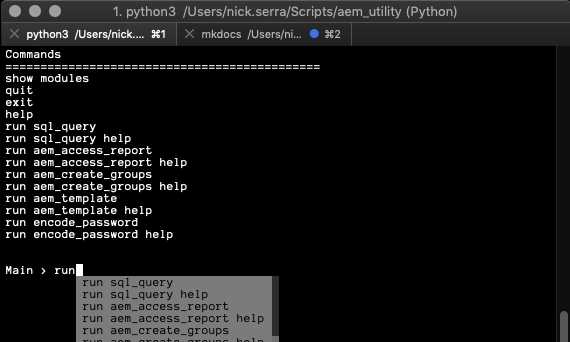
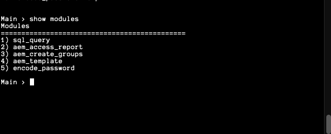
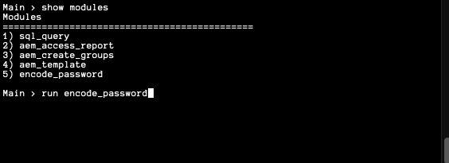
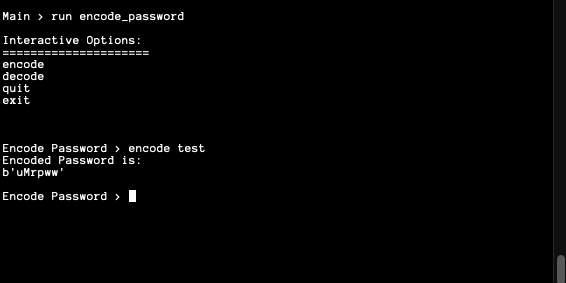
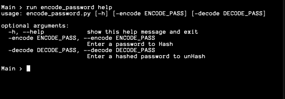
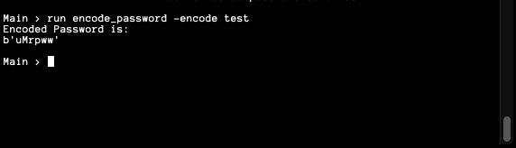
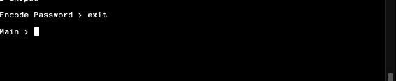

Welcome to the Interactive Framework
Summary
The Interactive Framework was created to modulate existing scripts into a single toolset.
The Framework will dynamically import modules from the module directory, provide recommendations on
commands, and allow you to run a module interactively or run with the necessary arguments from the main menu.
Alternatively, a flag is added to the aem_util.py script so you can run your module and arguments in a single command.
This is useful when designing jenkins jobs or other scheduled automation tasks.
Project layout
aem_util.py(Script Calls the actual framework with an easy to use name)-
base/
-
main.py(Main script for Interactive Framework) -
core/ (Directory for Core Framework Modules)
get_arguments.py(Module That Defines arguments for main.py)pyCommon.py(Module That Defines common imports and variables for import)
-
modules/ (Directory to store Modules)
encode_password.py(Module to encode / decode passwords)sql_query.py(Module to perform SQLite3 queries and return results)<Your Custom Module Here>
-
How to Run
To Run, simply run python and the aem_util.py like so:
python /path/to/aem_util.py
To execute in a single command and avoid running the main menu, Simply use the -m argument.
This example runs the sql_query.py module with multiple arguments
Example: python3 aem_util.py -m "encode_password --encode test"
Main Menu + recommendations:

Dynamically Import Modules without changing code:

Run Module Interactive:


Module Help / Acceptable Arguments:

Execute Module With Acceptable Arguments:

Exit Module:
